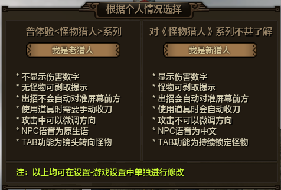
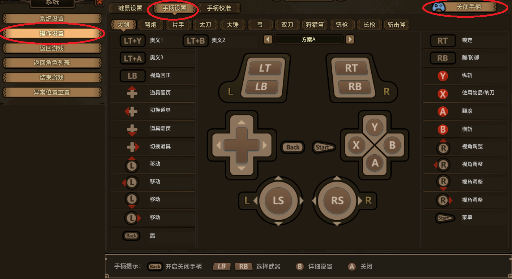
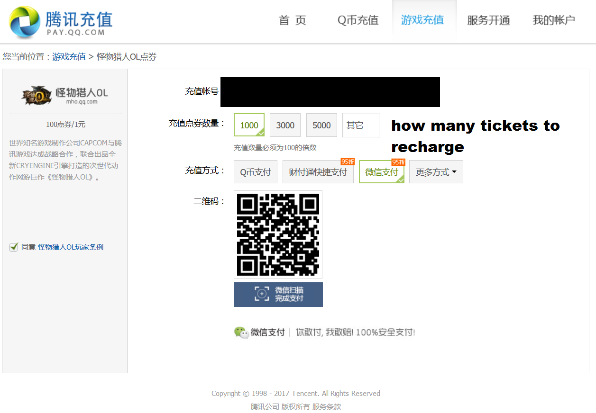
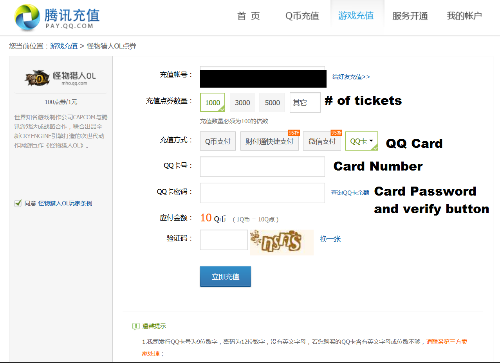

-
Hi I'm a new l33t hunter from the main series and want to know more about this game but can't speak chinese to save my life. Where can I begin?
The wiki is a great place to find more information about stuff in the game. You can also join our discord server and talk to us there!
-
Is there an english patch? I heard there was an english patch, Where is my english patch?!?!
Due to 10cent's encryption method, the english patch was KIA, but TeamHD is working hard on it. Meanwhile, there are multiple ways to enjoy the game without speaking chinese(after all, monster cries in pain are the same either in chinese or english). You can check our translation guide to have your own tools for translating chinese and you can always ask(with moderation) about stuff in the discord. Also, the english patch didn't even translate many quests so it's not like you are missing out on that ¯\_(ツ)_/¯ .
-
Hi, I'm new to the game, what server has the most english players?
As the moment of this article, there 2 active english communities: Hyperlynx (our discord) and MHOInter (Aslind Samure's). As for the specific servers, since 10cent(the game developer and publisher) tends to move servers around when they do game updates, it would be best if you join the discord server and ask around.
-
Help, I just made my character but I got bitch-slapped by a choice, it's a brown window, divided in two, DO I TAKE THE RED PILL OR THE BLUE PILL?
That screen does nothing more than choose some options presets for you. Left = Pr0 Hunt4h(classic monster hunter experience) Right= Dark souls Scrub(regular action game settings). Don't worry, they choice is not permanent and, regardless of what you choose, you should go tinker your options to your personal preference later.
 -
I just plugged in my controller and it's not working? Does this chineses piece of **** even support controller? Am I forced to use keyboard and mouse?
While the game has outstanding keyboard and mouse controls, you can certainly use a controller. To actually use it in game, you need to switch to controller mode by going to the control settings(2nd option in the menu), then going to the 2nd tab and pressing the blue controller icon in the top right corner (alternate method: press select/back button on the controller when on the last step).

For PS3 controller drivers, I recommend Xinput Wrapper (motion in joy sucks)Are there like, translations of menus or other things?More than you can imagine, hop on to the Hyperlynx discord and look around in #FAQ.
I have heard you can only a limited amount of hunts a day, WTF I WANNA HUNT ALL DAY MOM!The old hunter ticket system is no more, you can hunt until you realize you suck and quit. Or stick around and enjoy the game.
I have a quest with some weird red chinese text staring at me. I threw my wallet at it but it's still there. What does it want from me?Is that it? Good. That means that quest is considered a "Critical Quest" and will reward you with bonus experience the first time you complete it. Why? just because.
What weapon is the best?This is an online game which gets patched continuously, so the weapons "power rankings" change frequently. Additionally, monster hunter is all about freedom and choice, and all weapons are viable.
What is the best newbie armor? What armor should I craft to help me get started?In MHO we have Hunter Sets. Read that link to figure out how they work (information at the bottom). You will obtain a newbie hunter set around level 10 to help you get set up and you can get another at lvl 40. You do NOT need to craft armor to have a good set. At HR 65 all I have used are hunter sets.
Where are the high rank armors? low rank armor is for scrubsThere are no divisions between armors in MHO as there are in the main games. Every single piece of armor can be upgraded to max level at the blacksmith but..well...you might want the skills the Deviljho armor provides more than the ones the lowly velociprey does.
OMG, I can't read chinese, I can't translate anything, I am stuck in the story quest, what do I do?¯\_(ツ)_/¯.
Serious answer: Can't mind read your game ¯\_(ツ)_/¯. Try and speak to npcs, use items in your inventory(scrolls tend to be frequent culprits), check if the game wants to teach you a mechanic or something else I don't know.I have done everything, LITERALLY EVERYTHING BUT I CANNOT COMPLETE THIS QUEST, SEND HELP NAO.Are you sure you do not have to do the infamous HR Beaver hunt in History Chapter 16? N menu>lvl 1> 3*> 3rd tab?
 Anyone want to hunt with me? I don't want to hunt alone T_T
Anyone want to hunt with me? I don't want to hunt alone T_TSure, hop on the discord and ask around. Oh btw, we tend to not "carry" players for the carried ones are those who usually end up losing interest when no one is available to help them and quit short after(usually after insulting the community, go figure).
How do I access events?The list of events currently going on can be accessed by pressing a little button on the bottom right of your screen.It is right next to some "MTV" like looking chinese thing.
What are the 2 empty slots underneath my armor pieces at my character menu (P) that I don't have? how can I get them?Those are for the necklace and the ring. The necklace adds atk and you will get one automatically as you progress so don't worry until you actually have it. The Ring can be bought from guild hall seller. It adds elemental resistance, but honestly they all suck.
I have a star made of poop above my head, but mr l33tzor hr 6969 hunter has a gazillion gold stars. Is he pay to win?No, those are hunter stars. In the past hunter stars were an achievement system that let you unlock some cool shit. Now, they are just for show and do nothing. If you still want to unlock them, consult this guide (wiki adition of this is not considered a priority, so it will come, but laaaaaaaater).
What is the critical title, how do I get it, will it resurect my dead uncle Ben?No sorry Peter, we can't resurrect your uncle Ben. The crit title is, as the frigging words describe, a title for your character that gives you crit. It can be unlocked by following this guide (wiki article to come at a later date).
I am a returning player and I found my Box material tabs has been ransacked and the items inside replaced with crap bags. Wtf Tecent where are my Velociprey Scales!?!?!?!The patch that changed the leveling system and the hunting system made a lot of "low rank" item redundants, so they have been replaced with those bags to indicate they are no longer useful. You can safely sell them to the npc, unless you like having a full box just cause.
I keep getting disconnected and have lag all the time, I have heard a VPN solves all these issues, what is that and how it do I get one?A VPN is like a special highway, it redirects your traffic using another internet lane, so to speak. Some people say VPNs don't do squat, while others(myself included) swear by them. The only way to know if it will benefit you is to try them. China has a special firewall(the Great China Firewall) that affects all information coming in and out of the country, so your VPN would need to have a node in china for you to get max benefits. Also your VPN needs to not mask your IP Address, some people reported being banned because their VPN masked their IP address. Possible VPN solutions include:
- Mudfish -Cheap and easy to set up, half of our VPN users use this. You pre-charge it with money and it gets discounted according to how much data you use (online gaming usually doesn't take much data for your information). Range can be from 25 cents a month to a couple dollars(to get over a dollar you would need to be online 24/7)
- Xunyou MHO Accelerator - VPN made by one of Tencent's daughter companies, what most of the VPN users agree to as the best solution, but harder to set up since it's in chinese. Can be as expensive as $5 a month or as cheap as $20 a year depending on what plan and how you pay.
- Xunlei -Don't personally know any players who use this vpn, but a certain trustworthy russian listed it as a quality chinese VPN with a 1 week free trial, so it's worth mentioning.
- Kuaile-u -A VPN that should be familiar to chinese Blade&Soul Players. Used to be very good and free, but it got too popular and now their free channels are flooded. Worth a try for the desperate.
These are all nice and pretty options, but they are not even guaranteed to work for everyone ¯\_(ツ)_/¯ .
Can I buy cash shop currency? how do I do it?Yes, and it's actually very easy(but starts you on a spiral to poverty).
- Wechat(think of it like chinese facebook with credit card integration allowing you to pay for anything). If you have a chinese bank card(credit or debit both work as far as I know, but have no personal experience with either) you can download the WeChat app from the app store of your cell phone OS store. Then you add the card to the account, go to Pay.qq and choose wechat as the payment option, that will give you a QR code to scan with the wechat app. Warning: there have been reports of people losing money while attemping this method.
 - QQ Coins Cards: Find your favorite chinese coin reseller (we personally use SeaGM and OffGamers, but any page that sells QQ cards will be fine. After you buy your QQ cards, go to Pay.qq and select QQCard. You have to insert both the card number and the "card password" for it to work.

This page was created by @Trollzoku#9508